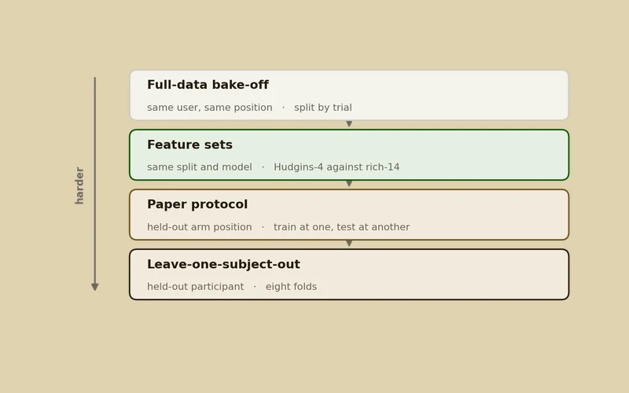
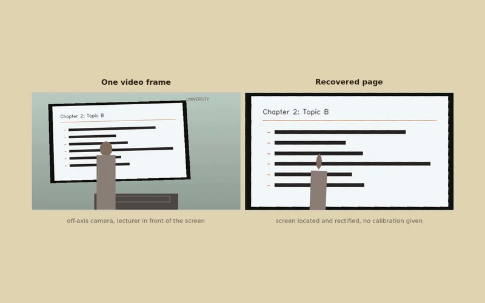
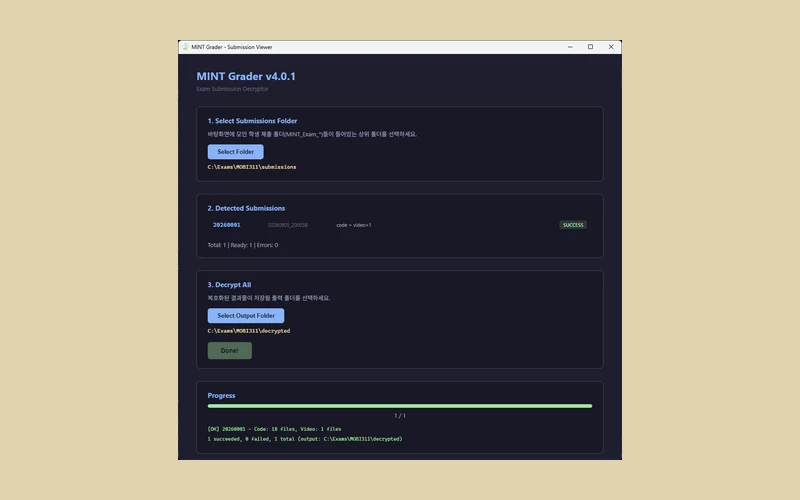

Wearable Robotics · Exoskeleton Engineer
Yuhyeon Lee

MINT Lab — Movement Intelligence Lab · Korea University
About
- Now
-
- Robot control built on foundation-scale AI models
- Bringing high-capability intelligence to real machines
- Next
-
- Complete exoskeleton systems
- Mechanism, actuation, and control designed as one
- Lab
-
- MINT Lab (Movement Intelligence Lab), Korea University
- Wearable & Healthcare group
- Advisor: Prof. Daekyum Kim
- Path
-
- B.S. in Information and Communication Engineering, Myongji University
- Integrated M.S./Ph.D. in Mechanical Engineering, Korea University
Research Interests
Wearable Robotics & Exoskeletons
UltimateExoskeletons · Assistive robotics · Human-robot interfaces
Physical AI
NowFoundation models · Robot control · Human motion
AI Methodology & Pipelines
Wearable sensing · IMU · PPG · EMG · Real-time deployment
Hardware Design & Human Experiments
Mechanism design · 3D printing · Human-subject validation
Education
-
Mar 2026 — Present
Korea University
Integrated M.S./Ph.D., Mechanical Engineering
MINT Lab (Movement Intelligence Lab) · Advisor: Prof. Daekyum Kim
-
Mar 2020 — Feb 2026
Myongji University
B.S., Information and Communication Engineering
Publications
-
PrintExo: An Open-Source, Shoe-Agnostic, 3D-Printable Ankle Exoskeleton for Accessible Locomotion Research
In revisionIEEE RAS/EMBS International Conference on Biomedical Robotics and Biomechatronics (BioRob)
-
Quantitative Ergonomic Assessment of Endoscopists Using Wearable Inertial Measurement Units and Optical Motion Capture
In preparation
Awards & Experience
- Feb 2026 Dean's Award — valedictorian, GPA 4.5 / 4.5, first in class every semester · Myongji University
- Jun 2025 Excellence Award, Idea Competition — KICS Summer Conference 2025 · The Korean Institute of Communications and Information Sciences
- Dec 2024 — Feb 2026 Undergraduate Researcher — MINT Lab, Korea University · continued into the integrated M.S./Ph.D. program
- Nov 2023 — Dec 2024 Undergraduate Researcher — SAINT Lab, Myongji University · Advisor: Prof. Jinhyun Ahn
- 2020 — 2025 Baekma Scholarship, Type 1 — top-of-department scholarship, awarded continuously · Myongji University
-
Jan — Dec 2024
President — A.I.C., central invention club · Myongji University
- Robot Application Idea Competition 2023 — drone-assisted parachute altitude control · team leader
- Campus Patent Universiade 2024 — open-type wearable air cleaner, patent landscape and claim analysis · team leader
- Creative Software Competition 2024 — split federated learning for smart-home energy use · solo entry
- Mar 2024 National Science & Technology Scholarship — two-year full support · Korea Student Aid Foundation
Projects
Research
-

Hip Exoskeleton Gait Assessment
Clinical gait measures from a hip exoskeleton's own encoders and thigh IMUs, distilled from motion-capture teachers into onboard models.
AIIMUEncoderPython -

sEMG Gesture Classifier
Six-gesture surface EMG on the public GREAT dataset: classical models judged as the evaluation stops sharing users, positions and sessions with training.
AIEMGPython -

TwinPose
3D human motion from two ordinary phone cameras, synchronized by a flashlight and calibrated by a printed checkerboard; no sync hardware, no suit.
AIVisionPython -

PPG Fist Classifier
Open hand or clenched fist from 16-channel wrist PPG alone, with a real-time UDP service and a twenty-second per-user calibration.
AIPPGPython -

IMU Gesture Classifier
Fifteen wrist gestures from a smartwatch's accelerometer and gyroscope, live: an entry detector answers when, a classifier answers which.
AIIMUPython


Development
-

MINT Sensor Studio
One window for IMU, EMG and PPG sensors and the signal processing taught on them, with simulated sensors whose truth is known.
SWAppIMUEMGPPGPython -

Lecture PDF
A lecture recording in, a slide handout out, with the lecturer's handwriting kept and no per-recording calibration.
SWVisionPython -

MINT Exam IDE
The student side of a programming exam: an editor that records how the code was written and seals the submission so it cannot be altered afterwards.
SWAppRust · TS -

MINT Grader
The invigilator's side: hash-checks and batch-decrypts sealed submissions into code, logs and recordings, one folder per student.
SWAppRust · TS -

IVO IMU-Vision Overlay
A presentation driven by wrist gestures and a webcam, with haptic acknowledgement on the wrist, local speech-to-text and handwriting OCR.
AIAppIMUVisionPython · JS -

IMU Streamer
A WearOS watch and an Android phone on one UDP socket, both devices in every packet, with a haptic command path back to the wrist.
AppIMUKotlin -

VOX
Hand signals from a smartwatch to a command post, for firefighters and police whose radios are half duplex, with the arm pose drawn live in Unity.
AIAppIMUPython · C#


Contact
- GitHub
- github.com/blueion0612
- instagram.com/yuhyeonkorea
- Discord
- yuhyeonkorea
- Location
- Seoul, South Korea